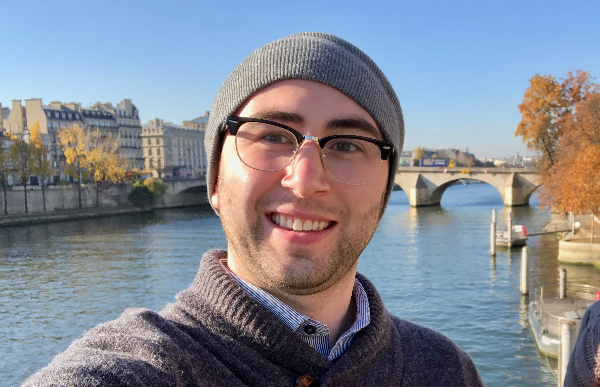

Hi, I'm Chris. Nice to meet you!
About Me
My name is Chris - I am a current Computer Information Systems Student at Buffalo State College. This fall 2019 is my first semester back in school, I had previously graduated from SUNY Brockport with a B.S. degree having studied History and Political Science. The past four years I have worked in the insurance industry holding positions as a Commercial Insurance Account Manager, Commercial Underwriter, and as a Claims Adjuster. I have always had an interest in all things tech and computers and after taking some lessons online and an Intro to CS Java course at CC I have decided to go all-in to pusue further education with aspriations of becoming a Software Developer. I am currently on the hunt for interships for summer 2020 if you know of any good leads!
Of the many things I like to do in my free time my top hobbies are taking my dog Pax on walks, photography (I took the photo above!) and watching a good TV series. Click below to learn more about me professionally and personally and please feel free to contact me so I can learn more about you as well!